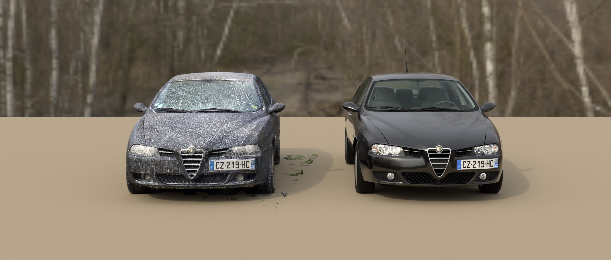
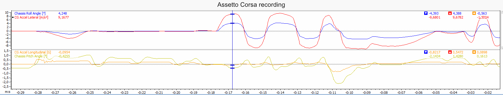

Some of my work modeling my Alfa Romeo 156
One of my personal projects has been to model my car for the simulation game Assetto Corsa.
This Alfa Romeo 156 is very fun to drive thanks to its great engine and unique suspension setup,
and I have attempted to faithfully convey this in my recreation.
The following is an overview of the different parts of the work I have done to achieve this goal.
3D modeling
I made my own 3D model of the car from scratch because I wanted to learn 3D modeling, I wanted the result to be custom-made for Assetto Corsa, and there was no good 3D model of the car online to base my work on.
I used photoscanning to create a base for me to model over using Blender.
While I was more interested in modeling the physics, I find this car truly beautiful, so it was important for me to accurately replicate its looks and I am satisfied with the result.

The biggest challenge of modeling the mesh for me was marrying large sweeping curves with high frequency details in the subdivision workflow of Blender. Adding detail in an area would deform the larger curves and make the panels look wobbely.
On the front doors for example, the geometry of the grip recess of the door handle clashed with the large curvature of the side of the car.
I had to make use of the shrinkwrap modifier to keep surrounding areas in place, and so to be able to model the finer details while keeping the surrounding curves stuck to their original shape.
The topology is still not great, but thanks to the shrinkwrap, the result looks correct.

For the interior geometry, the same process of photoscanning was used.


Physics modeling
Modeling the physics of the car accurately was tricky at first because I didn't know where to look for data beyond the workshop manual.
Over time, I have found Fiat's eLearn and ePER pages, from where I could source spring rates, damper ranges, anti-roll bar diameters and part weights.
To accurately model the suspension geometry, I scanned the suspension with photogrammetry as shown below.
This car has Alfa's asymetrical multilink setup at the rear. Toe is set up to heavily change with wheel travel, giving the car passive rear-wheel steering.

I initially hoped I might be able to approximate anti-roll bar and spring stifness by using my phone's IMU to gather data on the car's pitch/roll under longitudinal and lateral acceleration.
In the end, there was too much uncertainty in the all the parameters I had to get anything meaningful out of it.
In the final version, I ended up finding the real spring rate while uncovering Fiat documentation, and calculating the anti-roll bars stiffnesses from their geometry.
These measurements might only be useful for quality assurance.


The Fiat ePER catalogue contains weight information for all the parts of the car, but it doesn't contain their position.
I created a tool in Swift/SwiftUI to streamline the process of locating the parts, in order to approximate the center of gravity, as well as the moments of inertia in roll, yaw and pitch.
I used the C library mdbtools to extract the information from the catalogue's database.

Engine sound recreation
I felt having a good, authentic engine sound was important because bad engine sounds stick out and make mods feel unpolished.
In Assetto Corsa, I found engine sound quality comes down almost entirely to the quality of the sound capture.

To capture interior engine sounds, I simply recorded from my computer's microphone after placing it in the passenger seat.
For the exterior sound, I first recorded the engine sound from the side of the road, driving by at different RPM and engine loads.
Problem was, from the side of the road, a road car's engine note like mine is typically drowned out by tyre noise,
and I could not separate the engine note from the tyre noise in software.

To partially solve this problem, I convinced a friend of mine to sit in my boot to record the sounds close to the exhaust. It was surprisingly confortable according to him.
The recording is mixed-in for the chase view, but it is not a great solution : recording close to the exhaust introduced noise from the exhaust gas airflow,
but moving the microphone away introduced wind noises.

Overall, I feel mixed about the results. The interior sounds are correct but lack dynamic range and sound muffled.
Exterior sounds are better, clearly recognizable, but some issues remain. Wind noise can be heard at high RPM, and the looping is noticeable in some samples.
Conclusion
I have shown you all of this in the hope you can feel my dedication and passion for cars, driving dynamics and vehicle physics.
I have learned a great deal during this mod's development process.
I thought I did a good job on the first try, when in fact, the initial and final versions are almost entirely different.
In the end, I am very satisfied with the result.
Here is a link to the download page.
Thank you for your time.
- Contacts :
- bastian.cataldi@free.fr
- +33 (0)7 83 79 67 25